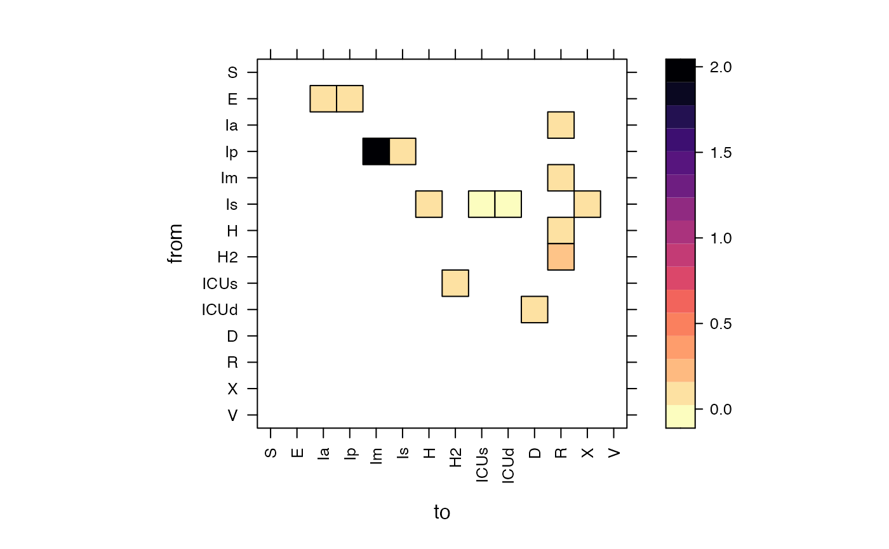

visualize rate (per-capita flow) matrix
show_ratemat(
M,
method = c("Matrix", "diagram", "igraph"),
subset = NULL,
xlab = "to",
ylab = "from",
sub = "",
zlim = c(0, 1),
aspect = "iso",
block_size = NULL,
block_col = 2,
axlabs = TRUE,
const_width = (method == "igraph"),
colour_palette = viridis::magma(n = 50, direction = -1),
do_symbols = NULL,
box.size = 0.02,
...
)Arguments
- M
rate matrix
- method
visualization method
- subset
list of two regular expressions, the first to subset rate matrix rows (based on rownames) and the second to subset columns (based on colnames)
- xlab
label on x axis
- ylab
label on y axis
- sub
subtitle for plot
- zlim
appears to be unused (!!)
- aspect
aspect ratio ("iso", "fill" are the sensible options)
- block_size
numeric vector of number of compartments per block; if NA, try to guess from number of epidemiological compartments
- block_col
each element in block_col controls the color of the corresponding grid overlay added by block_size (if add_blocks==TRUE)
- axlabs
for flow matrices, show axis tick labels?
- const_width
set flows to constant value of 1?
- colour_palette
vector of colours for rate matrix heatmap
- do_symbols
plot symbolic values for flows?
- box.size
box size for diagram
- ...
arguments to pass to lower level functions (plotmat::diagram/image/igraph)
Examples
params <- read_params("ICU1.csv")
state <- make_state(params[["N"]],E0=params[["E0"]], use_eigvec=FALSE)
M <- make_ratemat(state, params)
show_ratemat(M)

## silly but shows we can do multiple block types in different colours
show_ratemat(M, block_size=c(3,5), block_col=c(2,4))
#> Loading required namespace: latticeExtra